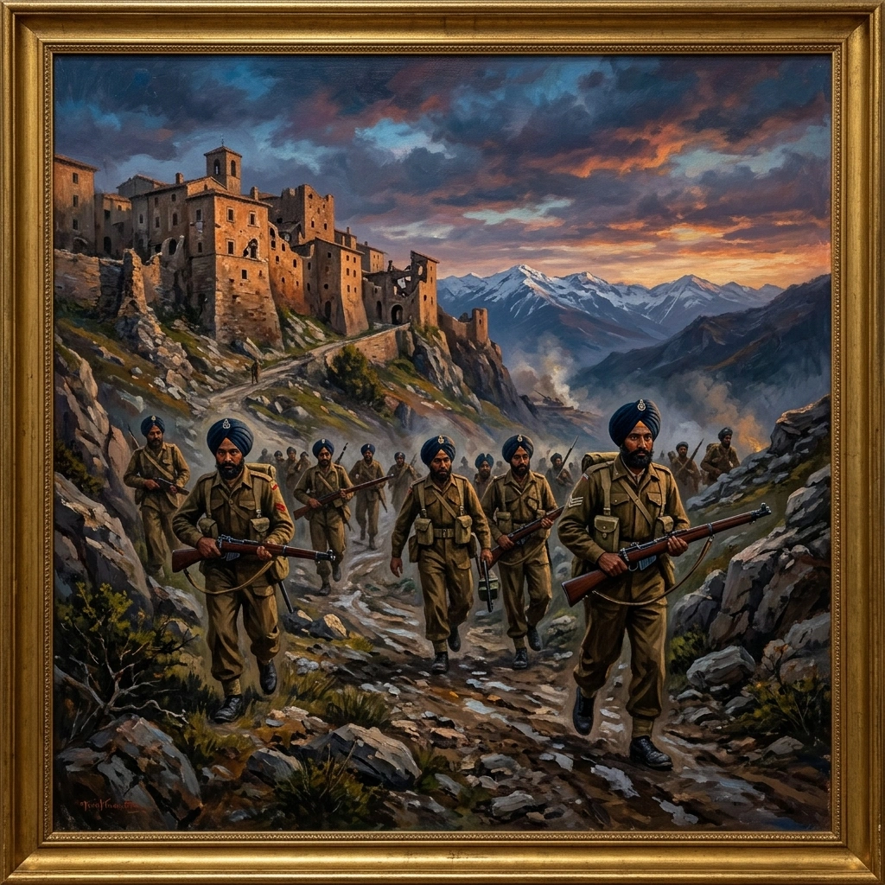

इटली और विजय


शीर्षक: Italy and Victory
श्रेणी: Italy and Victory
कलाकार: सिख रेजिमेंटal Centre
वर्ष: ऐतिहासिक
श्रेणी: Italy and Victory
कलाकार: सिख रेजिमेंटal Centre
वर्ष: ऐतिहासिक
इटली और विजय
इटली में, 2/11 सिख ने उम्बर्टिडे, अक्वालागना, कैरियानो रिज़, पोज्जियो सैन जियोवन्नी, ऑनफेर्नो, सैन मारिनो और रुबिकॉन वैली में लड़ाई लड़ी। मेजर हरवंत सिंह और जेमेदार काका सिंह को मिलिट्री क्रॉस से सम्मानित किया गया। 4/11 सिख ने मोंटे काल्वो, पेरारेसे, गोथिक लाइन, सीनियो और फ्रस्सिनेटो में लड़ाई लड़ी, जहां अप्रैल 1945 में उसने जर्मन पैराट्रूपर्स को पीछे धकेल दिया। यूरोप में विजय का जश्न 7 मई 1945 को मनाया गया। रेजिमेंट की युद्धकालीन भर्ती में 6/11, 7/11, 8/11, 9/11, 14/11 और 15/11 सिख, 26वीं गारिसन बटालियन और सिख मशीन गन बटालियन शामिल थे। उनकी सेवा से केरन, ओमार्स, डाइर-एल-शीन, नियोर, बुथिदॉंग, कांगलाटोंगबी, न्यांगु ब्रिजहेड, इरावाडी क्रॉसिंग, कोरियानो, सैन मारिनो, मोंटे काल्वो और गोथिक लाइन सहित बैटल ऑनर्स जुड़े। यह अभियान मई 1946 में कुआलालंपुर में 1/11 सिख के शताब्दी समारोह और दिसंबर 1946 में बॉम्बे में 2/11 रॉयल सिख के समारोह के साथ समाप्त हुआ।
इटली में, 2/11 सिख ने उम्बर्टिडे, अक्वालागना, कैरियानो रिज़, पोज्जियो सैन जियोवन्नी, ऑनफेर्नो, सैन मारिनो और रुबिकॉन वैली में लड़ाई लड़ी। मेजर हरवंत सिंह और जेमेदार काका सिंह को मिलिट्री क्रॉस से सम्मानित किया गया। 4/11 सिख ने मोंटे काल्वो, पेरारेसे, गोथिक लाइन, सीनियो और फ्रस्सिनेटो में लड़ाई लड़ी, जहां अप्रैल 1945 में उसने जर्मन पैराट्रूपर्स को पीछे धकेल दिया। यूरोप में विजय का जश्न 7 मई 1945 को मनाया गया। रेजिमेंट की युद्धकालीन भर्ती में 6/11, 7/11, 8/11, 9/11, 14/11 और 15/11 सिख, 26वीं गारिसन बटालियन और सिख मशीन गन बटालियन शामिल थे। उनकी सेवा से केरन, ओमार्स, डाइर-एल-शीन, नियोर, बुथिदॉंग, कांगलाटोंगबी, न्यांगु ब्रिजहेड, इरावाडी क्रॉसिंग, कोरियानो, सैन मारिनो, मोंटे काल्वो और गोथिक लाइन सहित बैटल ऑनर्स जुड़े। यह अभियान मई 1946 में कुआलालंपुर में 1/11 सिख के शताब्दी समारोह और दिसंबर 1946 में बॉम्बे में 2/11 रॉयल सिख के समारोह के साथ समाप्त हुआ।
मोबाइल पर खोलें
अपने फोन पर इस कलाकृति को देखने के लिए स्कैन करें।